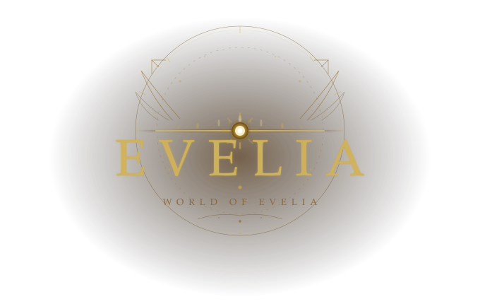

The Dread Mire
The Dread Mire is not a place that was created in a single moment. It is the result of time, pressure, and unresolved magic slowly sinking into the land.
0 Characters
Enter the Realm

This site was built by Volara, inspired by Avalon.
Thank you to everyone who contributed to this project, including:
Niori - for making Feralyn Hold and The Dread Mire
Kurosaki.pare - for making the Gods, Lothlo, and part of Thang'Tur
RedactedforChristmas - for making Beluar
Cantras - for making Chorla
Vess - for making The Jagged Maw
Komodo - for making Thang'Tur
And everyone who contributed music for the locations. See the full playlist below!
Ambient scores composed for each location.



Evelia is a world shaped by two great empires and a wound in the earth that has never fully healed.
Eladoria lies to the west. A civilization built on order, agriculture, and quiet faith. They worship Viaraxis, goddess of magic, and tend land blessed by her overflow from the Scar. Magic in Eladoria is studied, refined, and treated as a gift to be understood.
Ra'Ka'Tul lies to the east. A militaristic empire founded at the Crater Bastion — the birthplace of Zaryth, god of tenacity. Where Eladoria refines magic, Ra'Ka'Tul endures it. The land runs volatile and hungry, and its people are stronger for surviving it.
Between the two empires lies the Scar — the wound where Viaraxis first entered the world. It is not a ruin or a battlefield. It is a living thing. On calm days it glows. On stormy ones it sings. Magic bleeds from it constantly, settling differently on each side: orderly and nurturing to the west, raw and volatile to the east.
Every century, the Scar convulses. A wave of wild magic — called the Churn — floods the entire continent, amplifying the blessings of every god beyond what they intended. Harvests surge. Roads grow easier. Warriors are tested beyond their limits. The greedy grow monstrous. And from the Scar itself, things crawl out that were not there before.
No settlement near the Scar has gone unaffected. Some have not survived.
The gods of Evelia were not born from nothing — they were born from mortals. From the first time an emotion was felt deeply enough by enough souls to take divine form. Seven gods shape this world. Click the gods icon in the top left to learn more.

0 Characters
0 Characters
0 Characters
1 Character
0 Characters
1 Character
1 Character
0 Characters

The Dread Mire is not a place that was created in a single moment. It is the result of time, pressure, and unresolved magic slowly sinking into the land.
0 Characters

Temple of Viraxis
0 Characters

The glittering crown jewel of elven stability
0 Characters

A flowering land where the gods are said to have walked, leaving life and music in their wake.
1 Character

The Maw, once a large, natural, and sprawling forest of nature, is now a conduit for the Other.
0 Characters

The city is a fortress-furnace-sanctuary, all in one. It is the physical manifestation of the Ra’Ka’Tul ethos: Order imposed through superior force, upon a world of inherent chaos.
1 Character

A hidden settlement of beastkin and animal hybrids.
1 Character

Located in Ra' Ka' Tul, too close to The Scar of Sundering to be safe to visit.
0 Characters